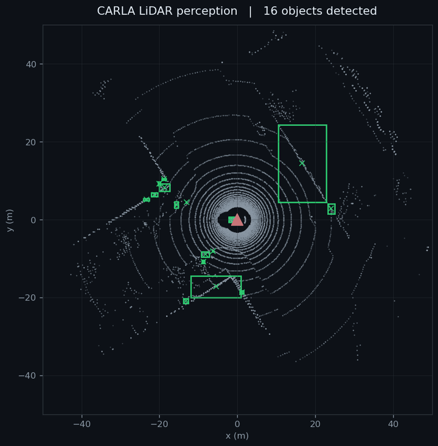
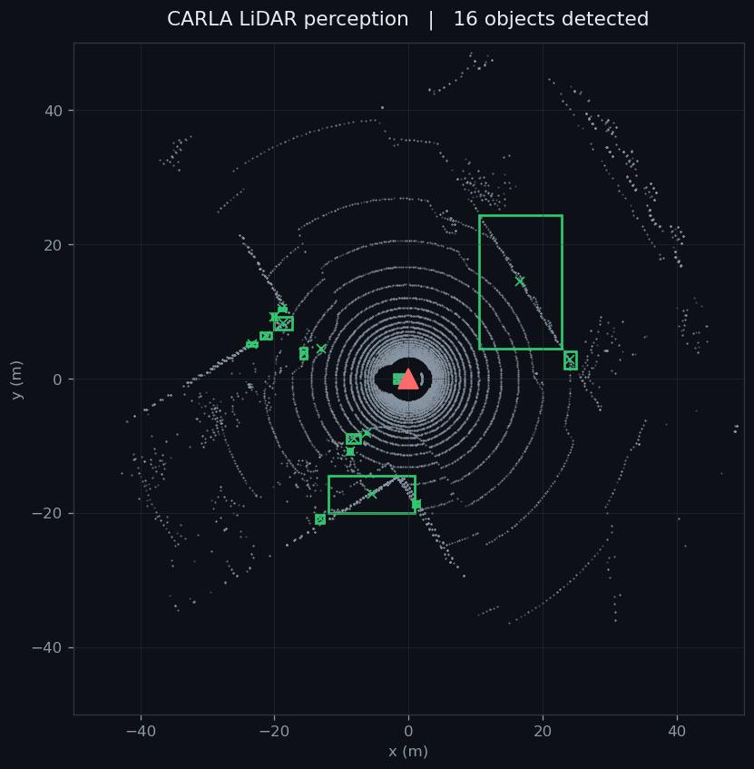

Every week so far the pipeline has carried a cloud of raw points. A dashboard can draw that cloud, but it does not understand it. This week is the step that does: take the wall of LiDAR points, throw away the ground, and group what is left into a handful of discrete objects with boxes around them. Perception.
TL;DR I ran a PCL perception node over the recorded CARLA LiDAR stream. It downsamples the cloud, segments out the ground plane with RANSAC, and clusters the remaining points into 3D bounding boxes, finding between nine and sixteen objects per frame. I rendered its output as a top-down bird's-eye view, so the detections are visible as green boxes around the ego vehicle. It runs fully offline from the recorded bag, on a server with no display, no live simulator, and no GPU. One honest note at the end about what a box does and does not mean.
A LiDAR sensor returns tens of thousands of points per spin. That is not yet information a car can act on. Perception is the step that turns those points into objects: instead of twenty-two thousand distances, a short list that says there is something roughly car-shaped here, and something else there. That list, with a box around each thing, is what a planner or a dashboard actually consumes.
The classic way to do this without any machine learning is geometric, and it is what runs here: remove the ground so objects stop being glued to it, then group the leftover points by proximity. Points that sit close together belong to the same thing. Each group becomes one detection.

The detector is a small C++ node built on PCL, the Point Cloud Library. It subscribes to the raw /carla/lidar cloud and, for every frame, runs a fixed sequence of filters. Each stage exists to make the next one cheaper or cleaner.
// the perception pipeline, one frame at a time
VoxelGrid leaf 0.2 m // thin ~22k points down to a manageable set
PassThrough z in [-2.0, 3.0] m // keep only the slab around the road
RANSAC plane dist 0.3 m // find the ground and remove it
Euclidean clustering // group the rest by proximity:
tolerance 0.6 m, min 15 pts // near points = the same object
// each surviving cluster -> an axis-aligned 3D bounding boxThe two stages that matter most are the ground removal and the clustering. Removing the ground is what lets clustering work at all: while every point is connected through the road surface, proximity grouping just returns one giant blob. RANSAC fits the largest flat plane in the slab, which is the road, and drops those points. What remains are the things standing on the road. Euclidean clustering then walks that remainder and joins any points within sixty centimetres of each other into one object, and anything with at least fifteen points becomes a detection with a box.
The node publishes each frame's boxes twice: as visualization_msgs/MarkerArray for viewers, and as vision_msgs/Detection3DArray, the standard message other ROS perception code expects, so the detections can feed a next stage later.
The server that runs CARLA has no display, so the usual ROS visualiser was not an option. Instead I wrote a small headless renderer that subscribes to the same two topics, the raw cloud and the detector's boxes, and draws a top-down view straight to an image file. No display, no GPU, just points and rectangles rendered to a PNG per frame.

The whole thing runs offline against the recorded bag, in the ROS 2 Humble environment. Three processes: the detector, the renderer, and the bag playback.
# in the ROS 2 (Humble) environment, with the workspace sourced
source ~/perception_ws/install/setup.bash
# 1. the perception node: /carla/lidar -> /carla/detections
ros2 run lidar_detector lidar_detector
# 2. a headless bird's-eye renderer: points + boxes -> one PNG per frame
python bev_render.py
# 3. replay the recorded CARLA LiDAR bag onto /carla/lidar
ros2 bag play ~/carla-bridge/carla_lidar
# the PNG frames are then stitched into the looping animation aboveOne practical detail worth recording: the capture for the animation ran on its own ROS_DOMAIN_ID, isolated from a background bag player that was already looping the same recording on the default domain. Without that isolation the detector sees two copies of the stream interleaved, and the frames come out doubled and out of order. On a separate domain the playback is clean, one frame per message, in order.
It is worth being precise about the claim, because it is easy to oversell this. The node detects clusters, not labelled objects. When the title says sixteen objects, it means sixteen groups of points that stand apart from the ground and from each other. It does not mean sixteen cars.
Honest scope There is no classification here and no comparison against ground truth. A box means points clustered together, so a car, a pedestrian, a pole, and a run of roadside wall all come back as boxes, and the large box in the still is exactly that, a wall rather than a vehicle. That is the correct next step: filter clusters by size, and add a classifier that says what each box actually is. This week proves the geometry works. Naming the objects comes after.
Status: the pipeline now has a real perception stage. The raw CARLA LiDAR cloud is segmented and clustered into 3D bounding boxes in real time, published on the standard vision_msgs topic, and visible as a bird's-eye animation, all running offline from the recorded bag.
Week 12 made the dashboard packageable and got it reviewed. This week gave the pipeline something worth drawing: not just points, but objects.
vision_msgs/Detection3DArray. It will be cleaned up and published alongside the app.